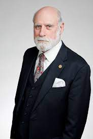
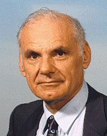

Paul Baran |
 Vannevar Bush |
 Vinton Cerf |
 Douglas Engelbart |
 Robert E. Kahn |
 J.C.R. Licklider |
 Robert Metcalfe |
 Lawrence Roberts |
Paul Baran (April 29, 1926 March 26, 2011)
He was a Polish-American engineer who was a pioneer in the development of computer networks. He was one of the two independent inventors of packet switching, which is today the dominant basis for data communications in computer networks worldwide, and went on to start several companies and develop other technologies that are an essential part of modern digital communication.
After joining the RAND Corporation in 1959, Baran took on the task of designing a "survivable" communications system that could maintain communication between end points in the face of damage from nuclear weapons during the Cold War.
Source:Wikipedia